import numpy as np
my_array = np.array([1, 2, 3])
print(my_array, my_array.dtype)[1 2 3] int64Hvordan kan vi lære noe av et datasett?
Ikke alt dekkes i forelesninger. Noe er bare i boka
import numpy as np
my_array = np.array([1, 2, 3])
print(my_array, my_array.dtype)[1 2 3] int64a = np.array([1, 5, 7.9])
print(a, a.dtype)[1. 5. 7.9] float64b = np.linspace(1.4, 7.9, 3)
print(b, b.dtype)[1.4 4.65 7.9 ] float64c = a*b
print(c, c.dtype)[ 1.4 23.25 62.41] float64d = np.dot(a, b)
print(d, d.dtype)87.06 float64import pandas as pd
df = pd.DataFrame({
"talent" : [4, 5, 3, 4, 6, 2],
"innsats" : [2, 4, 3, 7, 4, 1],
"resultat" : [24, 73, 25, 204, 93, 4]
})
print(df) talent innsats resultat
0 4 2 24
1 5 4 73
2 3 3 25
3 4 7 204
4 6 4 93
5 2 1 4df.plot("talent", "resultat", kind="scatter")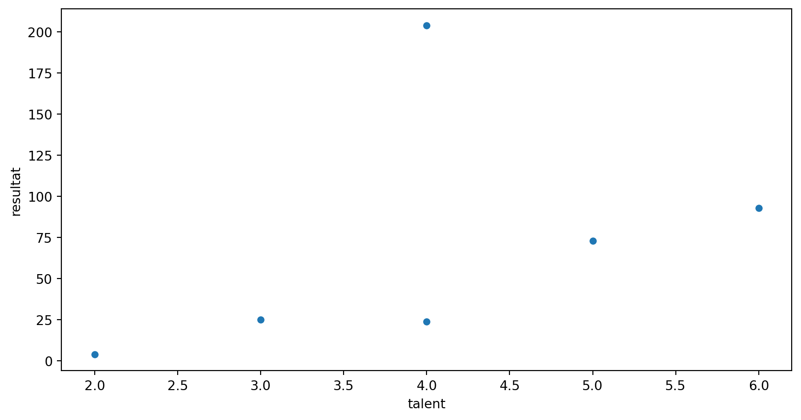
Vi kan gjøre mye med lite kode:
import seaborn as sns
df = sns.load_dataset('iris')
df.head()| sepal_length | sepal_width | petal_length | petal_width | species | |
|---|---|---|---|---|---|
| 0 | 5.1 | 3.5 | 1.4 | 0.2 | setosa |
| 1 | 4.9 | 3.0 | 1.4 | 0.2 | setosa |
| 2 | 4.7 | 3.2 | 1.3 | 0.2 | setosa |
| 3 | 4.6 | 3.1 | 1.5 | 0.2 | setosa |
| 4 | 5.0 | 3.6 | 1.4 | 0.2 | setosa |
import matplotlib.pyplot as plt
ax = plt.subplot(111)
for species, data in df.groupby("species"):
data.plot("petal_width", "petal_length", ax=ax, label=species, marker="o", linestyle="")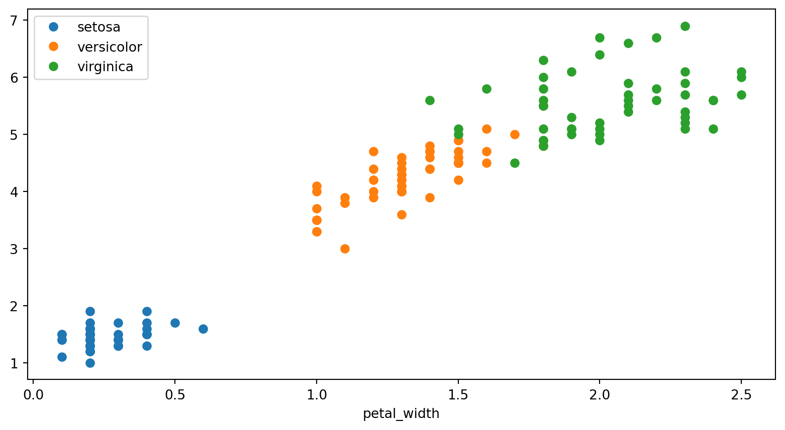
La oss anta at vi har lest inn prisdata fra nordpool og lagt dem i en csv-fil. Så begynner vi med prisen på strømmen.
import pandas as pd
df_pris = pd.read_csv("data/nordpool-dec-24.csv")
df_forbruk = pd.read_csv("data/meteringvalues-dec-2024.csv", sep=";", decimal=",")
nettopris = sum(df_forbruk['KWH 60 Forbruk']*df_pris["value"])/1000
med_moms = nettopris*1.25
print(f"Spotpris på strømmen inkl. moms er {med_moms:.2f} kr")Spotpris på strømmen inkl. moms er 2899.55 krFørst må vi ha værdata. Jeg antar vi har lagret det i en fil weather_blindern.json.
import json
with open("data/weather_blindern.json") as ifile:
json_content = json.load(ifile)
my_list = []
for data in json_content["data"]:
my_list += data["observations"]
df_temp = pd.DataFrame(my_list)
df_temp = df_temp[df_temp["timeOffset"] == "PT6H"]
print(df_temp.head()) elementId value unit \
1 mean(air_temperature P1D) 7.2 degC
3 mean(air_temperature P1D) 7.8 degC
5 mean(air_temperature P1D) 4.2 degC
7 mean(air_temperature P1D) -3.5 degC
9 mean(air_temperature P1D) -3.5 degC
level timeOffset \
1 {'levelType': 'height_above_ground', 'unit': '... PT6H
3 {'levelType': 'height_above_ground', 'unit': '... PT6H
5 {'levelType': 'height_above_ground', 'unit': '... PT6H
7 {'levelType': 'height_above_ground', 'unit': '... PT6H
9 {'levelType': 'height_above_ground', 'unit': '... PT6H
timeResolution timeSeriesId performanceCategory exposureCategory \
1 P1D 0 C 2
3 P1D 0 C 2
5 P1D 0 C 2
7 P1D 0 C 2
9 P1D 0 C 2
qualityCode
1 NaN
3 NaN
5 NaN
7 NaN
9 NaN from datetime import datetime
def date_func(row):
date_object = datetime.strptime(row["Fra"], "%d.%m.%Y %H:%M")
return date_object.date()
df_forbruk["date"] = df_forbruk.apply(date_func, axis=1)
forbruk_per_dag = df_forbruk.groupby("date").sum()
x = df_temp["value"]
y = forbruk_per_dag["KWH 60 Forbruk"]import matplotlib.pyplot as plt
plt.scatter(x, y)
plt.xlabel("Utetemperatur [$^\circ$C]")
plt.ylabel("Strømforbruk [kWh]")Text(0, 0.5, 'Strømforbruk [kWh]')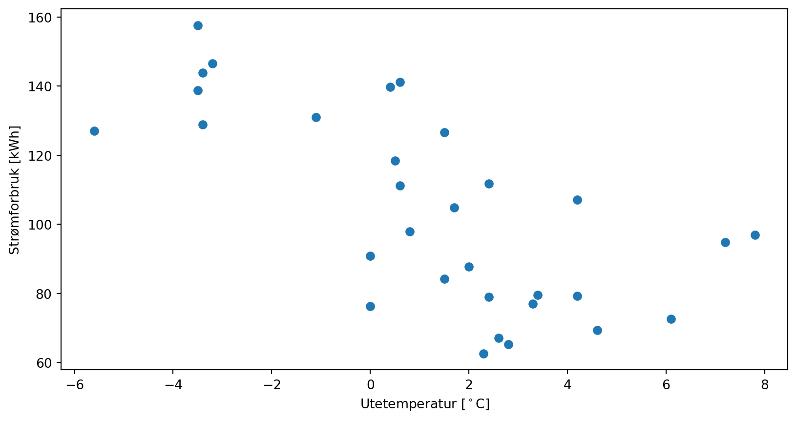
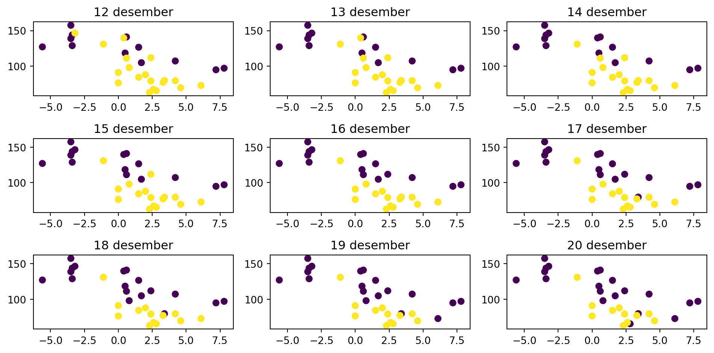
Fra strøm i naturfag på vgs/ungdomsskolen vet vi at \[U = RI \implies I = \frac{1}{R}U\]
Kan plotte:
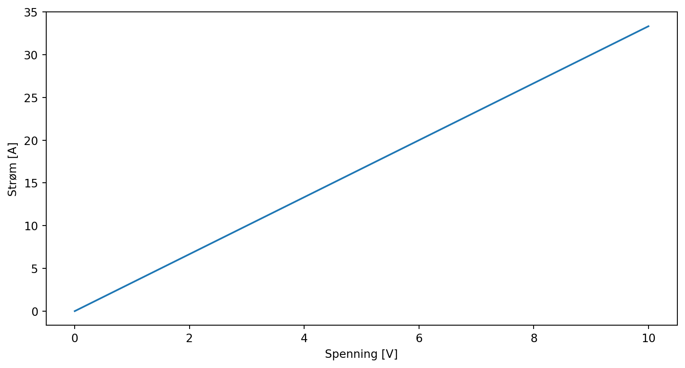
Vi går på laben og finner en Ohmsk motstand, og måler, da forventer vi å finne noe slikt:
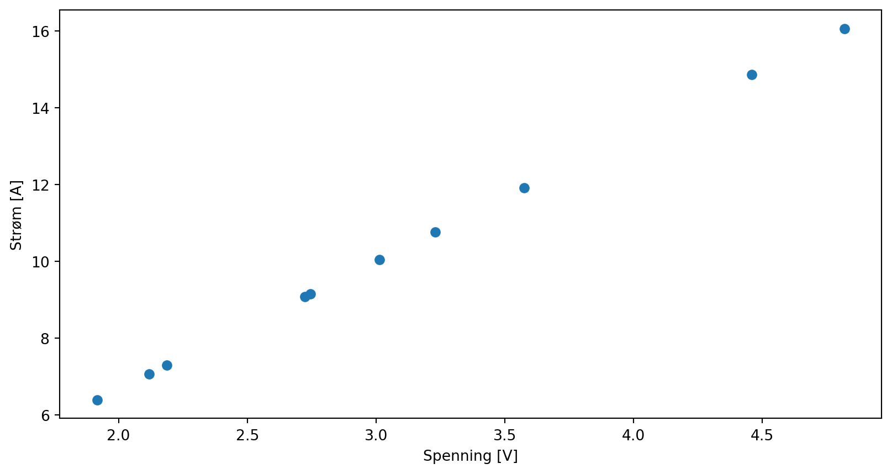
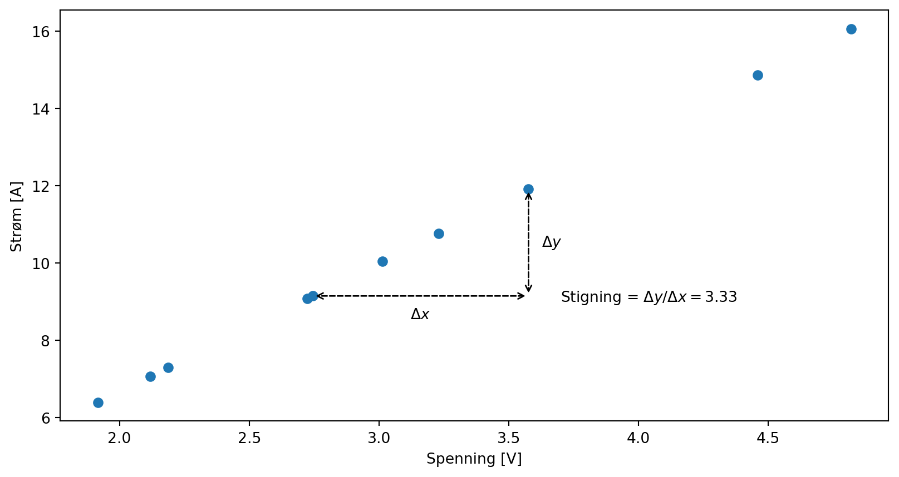
Siden stigningen er 3.33…, så er motstanden \(0.3 \Omega\).
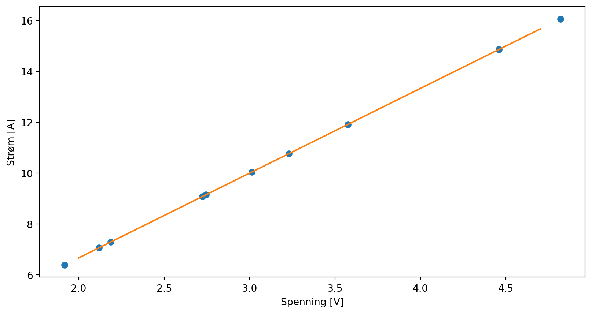
Dermed kan vi plotte en linje sammen med datapunktene
Men er det slik måleserier ser ut i virkeligheten?
Vi får nok heller noe som ser slik ut:
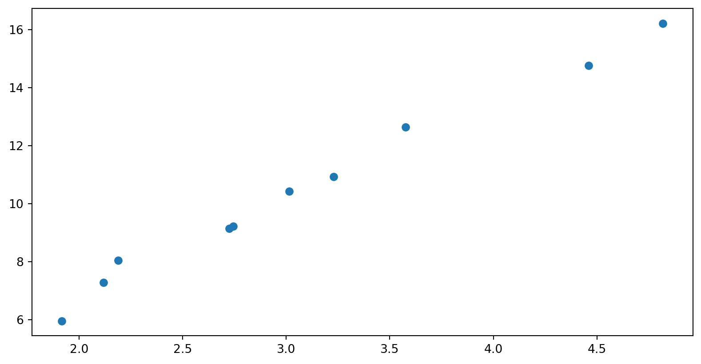
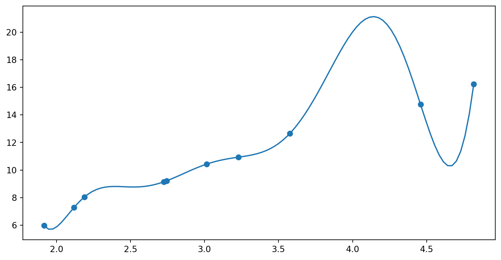
Nå må vi forholde oss til verden slik den er. Det er alltid en viss usikkerhet vi ikke klarer å forklare uansett hvor god modell vi har. \[y=f(x) + \varepsilon\]
Der \(\varepsilon\) representeter en usikkerhet som vi ikke klarer å plukke opp med vår modell av fenomenet.
Vi ønsker å finne parametre \(\beta_0\) og \(\beta_1\) i funksjonen \[\hat{f}(x) = \beta_1 x + \beta_0\]
Slik at når vi sier at \(\hat{y} = \hat{f}(x)\), så minimerer vi
\[\sum_{i=0}^N (y_i - \hat{y}_i)^2\]
Dette heter minste kvadraters lineær regresjon.
import numpy as np
p = np.polyfit(U, I, 1)
print(p)[3.34088808 0.17706321]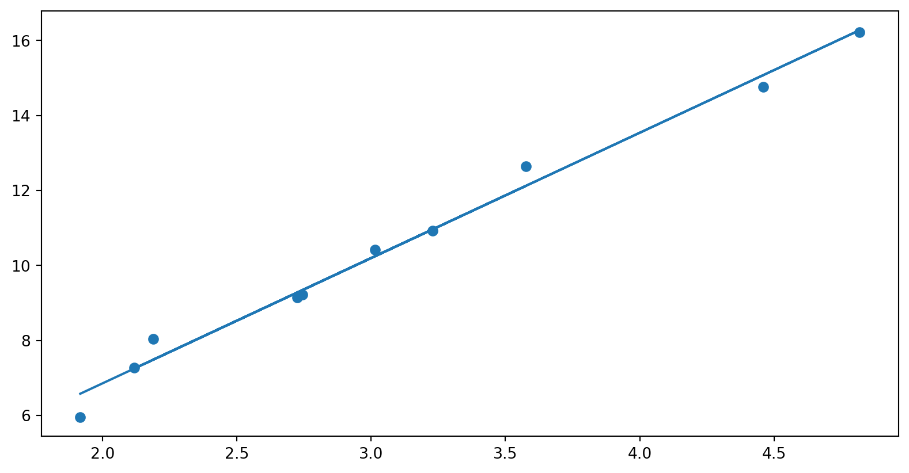
Skriv opp for deg selv, hva som er sammenhengen mellom den rette linja og datapunktene her om vi har gjort lineær regresjon.
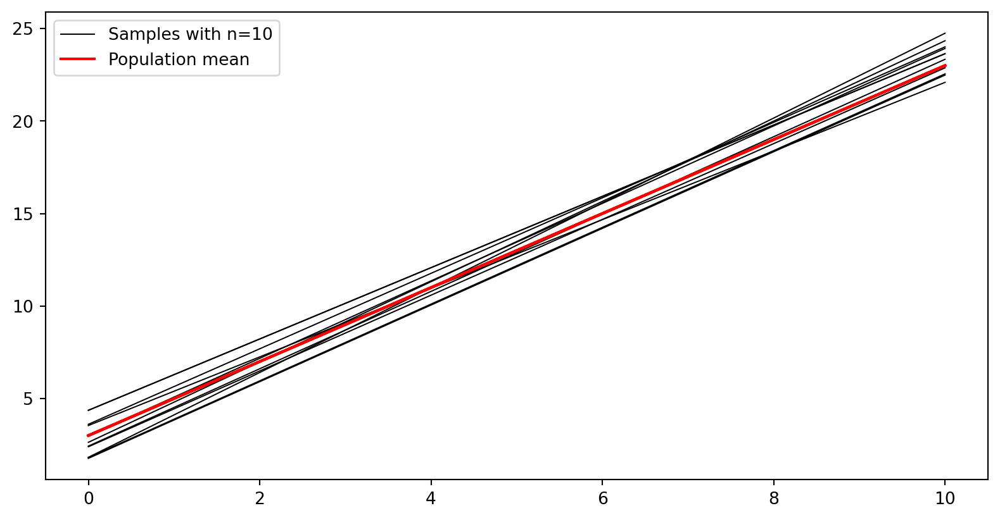
a) Lag deg en affin funsjon (f. eks \(f(x) = 2x + 3\)). Trekk 10 tilfeldige tall, beregn \(f(x) + \varepsilon\) der du setter inn et tilfeldig normalfordelt tall som \(\varepsilon\) med np.random.normal(...). Verifiser med et plott at ting fungerer som de skal
b) Gjør en lineærtilpasning med np.polyfit(x, y, 1). Plott lineærtilpasningen sammen med de litt spredte punktene dine.
c) Gjenta mange ganger (f. eks 10000 i en for-løkke), og lagre stigningstallet som estimeres for hver enkelt linje. Plott et histogram over stigningstallene, med plt.hist.
def f(x):
return 2*x + 3
x = np.linspace(0, 10, 10)
y = f(x) + np.random.normal(0, 1.5, 10)
p = np.polyfit(x, y, 1)
y_hat = np.polyval(p, x)
plt.plot(x, y, "o")
plt.plot(x, y_hat)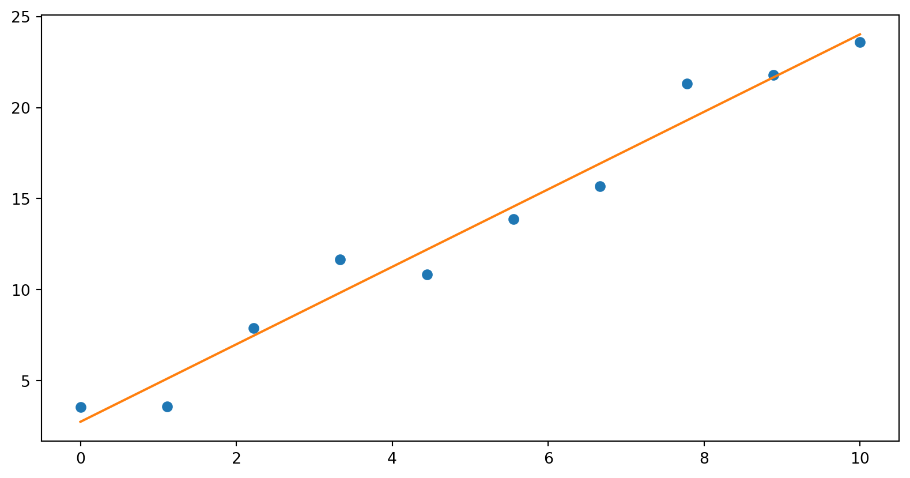
<Figure size 960x480 with 0 Axes>N = 10000
slopes = []
for i in range(N):
x = np.linspace(0, 10, 10)
y = f(x) + np.random.normal(0, 1.5, 10)
p = np.polyfit(x, y, 1)
slopes.append(p[0])
_ = plt.hist(slopes, bins=30)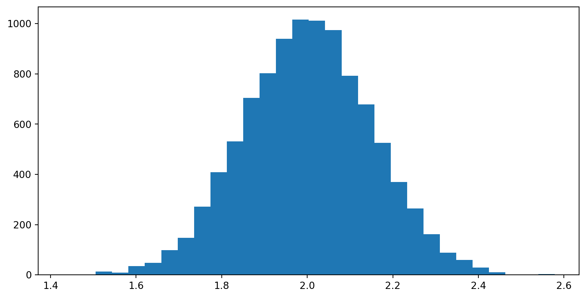
N = 10000
slopes = []
for i in range(N):
x = np.linspace(0, 10, 100)
y = f(x) + np.random.normal(0, 1.5, 100)
p = np.polyfit(x, y, 1)
slopes.append(p[0])
_ = plt.hist(slopes, 30)
plt.xticks(fontsize=14)
plt.yticks(fontsize=14)
plt.savefig("figures/est_beta1.png")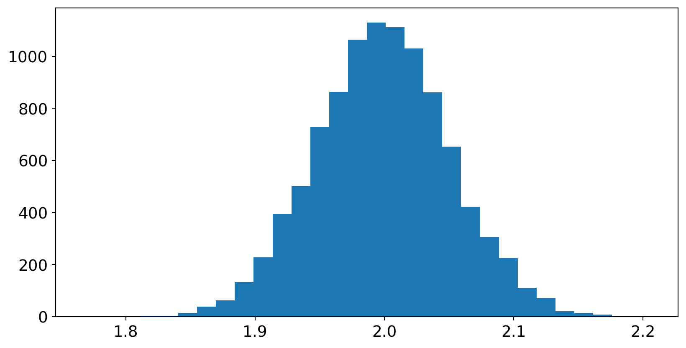
Hva skjedde med fordelingen av stigningstall?
a) Hva skjedde med fordelingen av stigningstall ved lineær regresjon da vi økte fra 10 til 100 punkter?
b) Hvordan skal vi tolke dette?
Fra boka har vi følgende formel for forventet feil i stigningtallet: \[\mathrm{SE}(\hat{\beta}_1) = \sqrt{\frac{\sigma^2}{\sum_{i=1}^n(x_i-\bar{x})^2}}\]
der \(\sigma\) er standardavviket til den tilfeldige variablen \(\varepsilon\) i \(y = f(x) + \varepsilon\)
Vi trakk tilfeldige tall med \(\sigma=1.5\) og hhv. 10 og 100 jevnt fordelte tall fra 0 til 10. Altså:
x = np.linspace(0, 10, 10)
se = np.sqrt(1.5**2/np.sum((x-np.mean(x))**2))
print(f"Standard feil for n=10: {se}")
x = np.linspace(0, 10, 100)
se = np.sqrt(1.5**2/np.sum((x-np.mean(x))**2))
print(f"Standard feil for n=100: {se}")Standard feil for n=10: 0.1486301082920587
Standard feil for n=100: 0.051444481273168134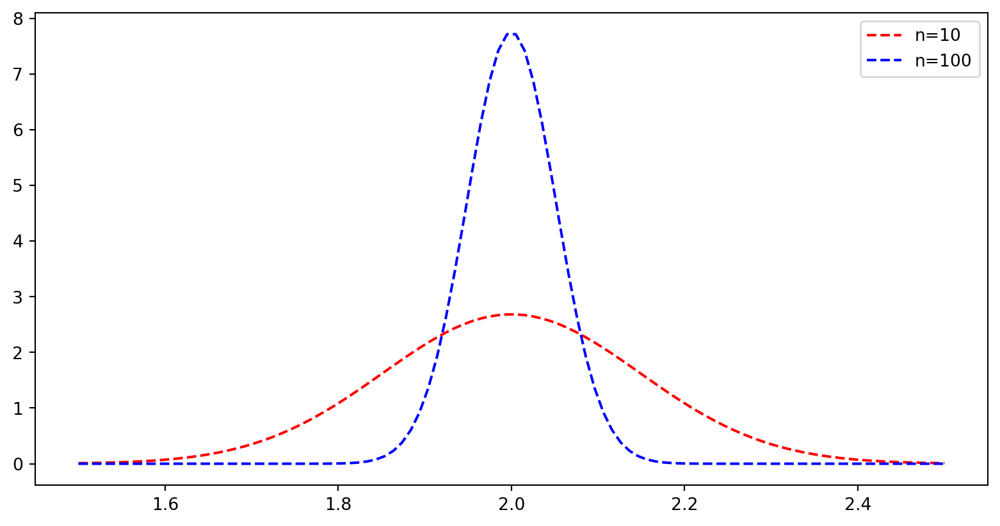
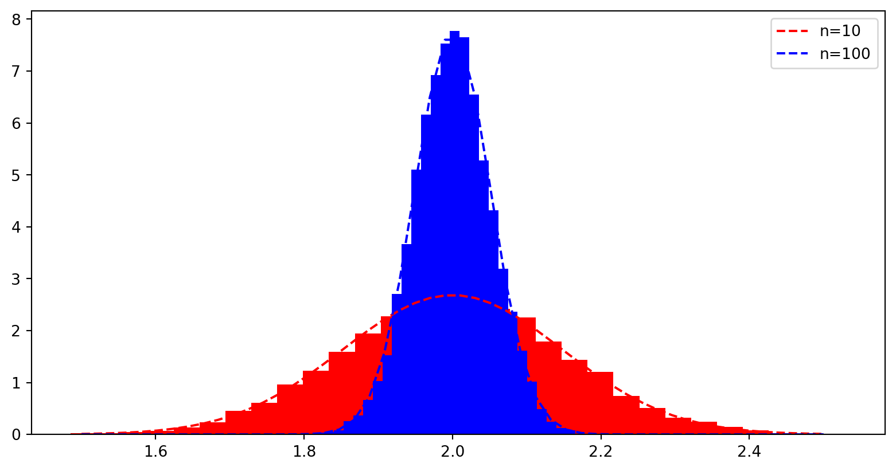
Men om vi har målt noe, så har vi jo bare én måleserie. Hva kan vi gjøre da?
Bootstrap: Sample deler av datasettet vårt mange ganger, for å se hvordan regresjonskoeffisiente varierer.